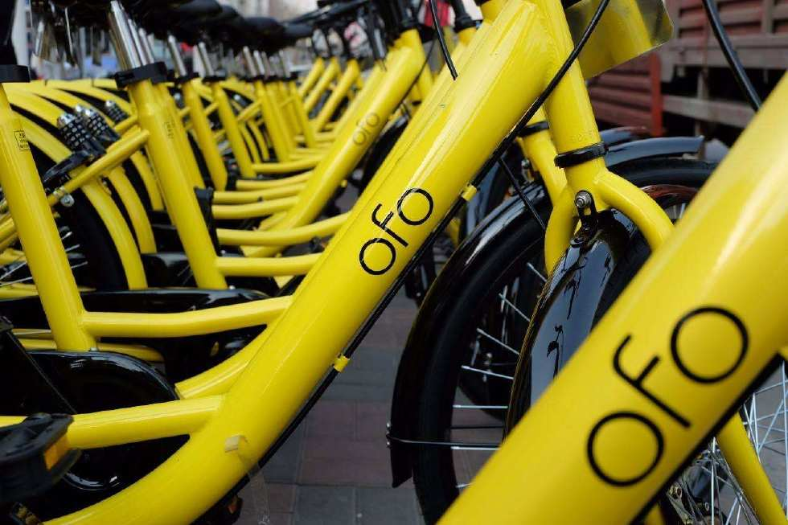

ofo“小黄车”可以黄 但共享单车不该黄

【一周焦点】“小黄车”可以黄，但共享单车不该黄
“信任崩塌”“至暗时刻”“没有奇迹”……上周，持续发酵的共享单车ofo小黄车押金挤兑风波进入高潮。17日，ofo发布退押金政策提醒，承诺依序妥善处理好押金事宜，希望广大用户耐心等待。
此前，从9月份曝出退押金难问题之后，ofo一直极力否认，并坚称没有挪用用户押金。同时，ofo采取了多次单方面拉长押金退还时间、将APP内退押金按钮变灰等技术手段，以“挽留用户”。面对如此“挽留”，广大用户显然难以买账。截至20日，ofo线上退押金排队人数已经突破1200万。
很难想象，这样的场景发生在一家估值曾高达200亿元的企业身上。更让人惊讶的是，从光环加身，到惨遭用户抛弃，ofo仅仅用了3年。
从昔日倒掉的数家共享单车企业到今日的ofo，共享出行企业的生死都呈现出惊人的相似：曾经站在风口的新经济、新业态在资本的裹挟下野蛮生长，快速消耗资本却难以找到合适的盈利模式，随着资本的离场，企业因无力负担扩张和运营成本而举步维艰。有媒体评论，如何走出“烧钱圈地”发展模式，如何摆脱对资本的依赖，已经成为共享经济行业无法回避的首要问题。
企业需要为投资人负责，也需要为社会负责。回顾共享单车的发展历程，凭借为城市带来了一种新的廉价、便捷且低碳的出行选择，得以开启了一个精彩的上半场。但倘若企业无法解决无序停放、占用道路等新的城市治理问题，共享单车的下半场或将提前收场。
对于总部持续遭遇用户现场“围攻”的ofo而言，可能已经来不及思考这些问题了。要求现场退押金的用户队伍从大楼5层排至街头，延绵数百米。
正如媒体评论，用户期待ofo能够维系住企业的尊严感和责任感，信守承诺将押金退还给每一个申请者。这不仅关乎人们对一家公司的信心，更关乎人们对整个共享经济模式的信心。
毕竟，即便小黄车“黄”了，共享单车依然有市场。在我国不少城市，尤其是大中城市，公交及轨道交通站点覆盖不足，缺乏接驳保障的情况依然存在；而根本性的解决方案产城融合和职住平衡工作依然在短期内难以实现；在公共交通末端、各大交通枢纽仍然是黑车、黑三蹦子的聚集点……共享单车依然是城市“最后一公里”上重要的出行选择。
然而，随着资本市场的冷却和各地“禁投令”的实施，见诸报端的共享单车找车难、用车难甚至“一车难求”的情况日益严峻。
通过网络搜索可以发现，围绕“最后一公里”的有关数据、分析和报告，多来自于前几年共享出行行业火热之时。彼时，在北京有20%的打车订单需求是“打车去坐地铁”，在全国有超过2亿人次因共享出行受益。而今，各个市场机构已无太多动力去关注和分析城市“最后一公里”上还有多少需求。毕竟，已经被讲过的“故事”很再难吸引投资人的“兴趣”。
但回过头来看，ofo多达1200万的排队退押金用户已经给出了最新、最权威的数据，这个数字没有水分、没有泡沫。它既是共享单车生存困局的铁证，更是共享出行巨大需求的铁证。从这点来看，共享经济的发展前景还是很可观的，但需要尽快建立健全押金管理制度，并鼓励采用免押金模式替代，从而走出“押金难退”的泥沼。
来源：工人日报
|